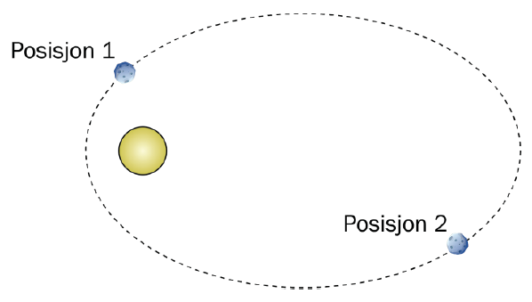

En asteroide går i en ellipsebane rundt sola. Figuren viser asteroiden ved to ulike posisjoner i banen. Se bort fra alle andre himmellegemer enn sola og asteroiden.
Ved hvilken av posisjonene er den potensielle energien størst?
